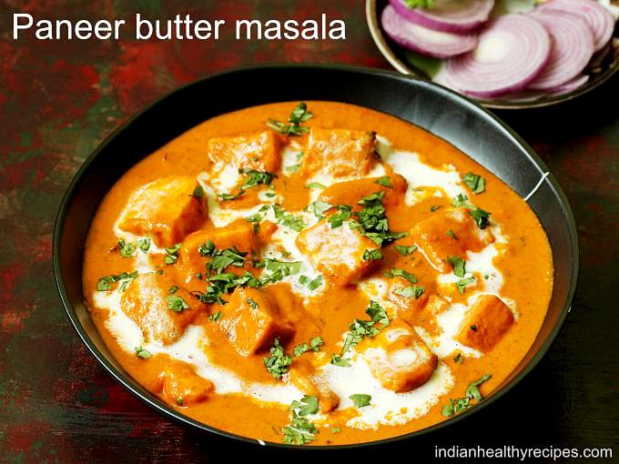

Paneer Butter Masala

Description
Paneer Butter Masala is a popular North Indian dish made with soft paneer
cooked in a rich and creamy tomato-based gravy with aromatic spices.
Ingredients
- Paneer
- Butter
- Tomatoes
- Cream
- Curd
- Ginger
- Garlic
- Garam masala
- Turmeric
- Red chilli powder
- Salt
- Fresh coriander
Steps
- Cut the paneer into cubes and lightly fry them in butter.
- Prepare the tomato-based gravy with butter, ginger, garlic, and spices.
- Add the cooked paneer to the gravy and simmer for several minutes.
- Add the cream, stir well, and cook until the gravy becomes rich and creamy.
- Garnish with fresh coriander and serve hot.
Home